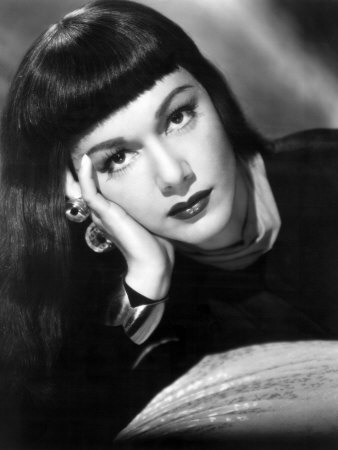

María Montez
María África Gracia Vidal (6 June 1912 – 7 September 1951), known as The Queen of Technicolor, was a Dominican motion picture actress who gained fame and popularity in the 1940s as an exotic beauty starring in a series of filmed-in-Technicolor costume adventure films. Her screen image was that of a hot-blooded Latin seductress, dressed in fanciful costumes and sparkling jewels. She became so identified with these adventure epics that she became known as "The Queen of Technicolor". Over her career, Montez appeared in 26 films, 21 of which were made in North America and the last five were made in Europe.

Audrey Hepburn
Audrey Hepburn was a British actress, model, dancer and humanitarian. Recognised as a film and fashion icon, Hepburn was active during Hollywood's Golden Age. She was ranked by the American Film Institute as the third-greatest female screen legend in Golden Age Hollywood and was inducted into the International Best Dressed List Hall of Fame.
Born in Ixelles, a district of Brussels, Hepburn spent her childhood between Belgium, England and the Netherlands. In Amsterdam, she studied ballet with Sonia Gaskell before moving to London in 1948, continuing her ballet training with Marie Rambert, and then performing as a chorus girl in West End musical theatre productions.
Elizabeth Taylor
Dame Elizabeth Rosemond Taylor, DBE (27 February 1932 – 23 March 2011) was a British-American actress, businesswoman, and humanitarian. She began her career as a child actress in the early 1940s, and was one of the most popular stars of classical Hollywood cinema in the 1950s. She continued her career successfully into the 1960s, and remained a well-known public figure for the rest of her life. In 1999, the American Film Institute named her the seventh-greatest female screen legend.
Born in London to wealthy, socially prominent American parents, Taylor moved with her family to Los Angeles in 1939, and she was soon given a film contract by Universal Pictures.
Hedy Lamarr
Hedy Lamarr (born Hedwig Eva Maria Kiesler, November 9, 1914 – January 19, 2000)[a] was an Austrian-born American film actress and inventor.
At the beginning of World War II, Lamarr and composer George Antheil developed a radio guidance system for Allied torpedoes, which used spread spectrum and frequency hopping technology to defeat the threat of jamming by the Axis powers. Although the US Navy did not adopt the technology until the 1960s, the principles of their work are arguably incorporated into Bluetooth technology, and are similar to methods used in legacy versions of CDMA and Wi-Fi. This work led to their induction into the National Inventors Hall of Fame in 2014.
Ava Gardner
Ava Lavinia Gardner (December 24, 1922 – January 25, 1990) was an American actress and singer.
She was signed to a contract with Metro-Goldwyn-Mayer in 1941 and appeared mainly in small roles until she drew attention with her performance in The Killers (1946). She was nominated for the Academy Award for Best Actress for her work in Mogambo (1953), and also received BAFTA Award and Golden Globe Award nominations for other films.
Gardner appeared in several high-profile films from the 1940s to 1970s, including The Hucksters (1947), Show Boat (1951), Pandora and the Flying Dutchman (1951), The Snows of Kilimanjaro (1952), The Barefoot Contessa (1954), Bhowani Junction (1956), On the Beach (1959), 55 Days at Peking (1963).

Veronica Lake
Veronica Lake (born Constance Frances Marie Ockelman; November 14, 1922[1] – July 7, 1973) was an American film, stage, and television actress. Lake won both popular and critical acclaim for her role in Sullivan's Travels and for femme fatale roles in film noirs with Alan Ladd, during the 1940s. She was also well known for her peek-a-boo hairstyle. Lake's career had begun to decline by the late 1940s, in part due to her alcoholism. She made only one film in the 1950s but appeared in several guest-starring roles on television. She returned to the screen in 1966 with a role in the film Footsteps In the Snow, but the role failed to revitalize her career.
Lake released her memoirs, Veronica: The Autobiography of Veronica Lake, in 1970. She used the money she made from the book to finance a low-budget horror film Flesh Feast.